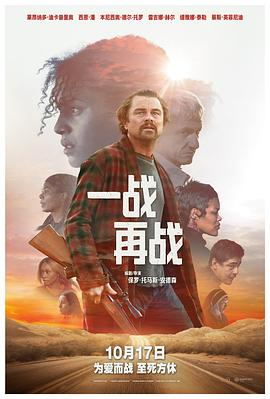

一战再战 / One Battle After Another
又名：一场又一场的战斗 / 无尽之战 / 鏖战不息 / 葡萄园 / The Battle of Baktan Cross
节奏上比《血色将至》好很多，全部看下来一点也不枯燥。音乐塞得好满，基本没停过。标志的大横移镜头炉火纯青，最后的pov镜头压迫感十足。可怜的鲍勃被玩弄在股掌之间。自由难不成就是去责任化么，不能吧。
作品信息
| 导演 | 保罗·托马斯·安德森 |
| 编剧 | 保罗·托马斯·安德森 / 托马斯·品钦 |
| 主演 | 莱昂纳多·迪卡普里奥 / 西恩·潘 / 本尼西奥·德尔·托罗 / 蔡斯·英菲尼迪 / 缇雅娜·泰勒 / 雷吉娜·赫尔 / 伍德·哈里斯 / 阿拉娜·哈伊姆 / 保罗·格里姆斯塔德 / 莎娜·麦克黑尔 / 斯塔尔勒塔·杜波利斯 / 埃里克·施维克 / 托尼·戈德温 / 詹姆斯·唐尼 / 约翰·胡热那克 / 凯文·泰德 / D·W·莫菲特 / 丹·查里顿 / 艾普尔·格雷斯 / 珀尔·米妮·安德森 / 吉娜·马隆 / 乔恩·比弗斯 |
| 类型 | 剧情 / 动作 / 惊悚 / 犯罪 |
| 制片国家/地区 | 美国 |
| 语言 | 英语 / 西班牙语 |
| 上映日期 | 2025-10-17(中国大陆) / 2025-09-24(法国) / 2025-09-26(美国) |
| 片长 | 162分钟 |
| IMDb | tt30144839 |
说过什么
2025-10-18 16:24:35
广播 · 看过 · ★★★★★
节奏上比《血色将至》好很多，全部看下来一点也不枯燥。音乐塞得好满，基本没停过。标志的大横移镜头炉火纯青。可怜的鲍勃被玩弄在股掌之间。自由难不成就是去责任化么，不能吧。
最后一次看到是 2026-10-07T23:13:00+08:00 · 豆瓣原页